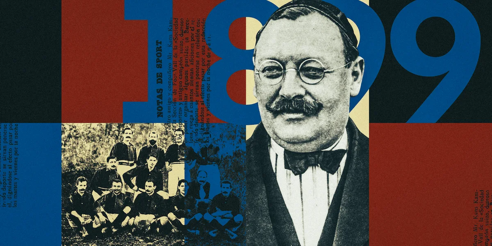
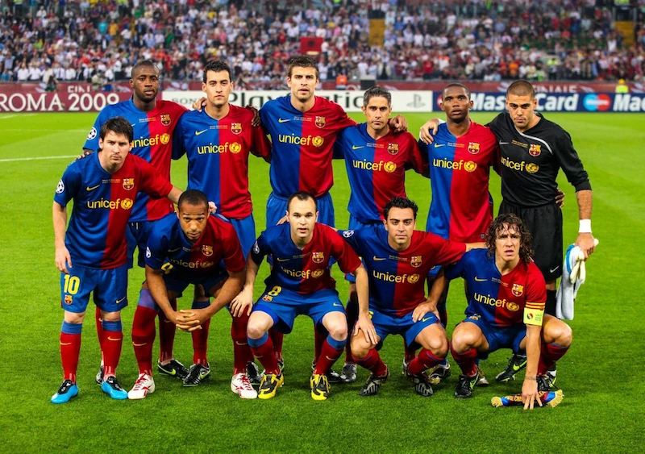
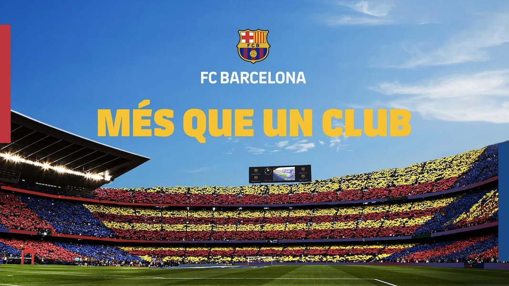
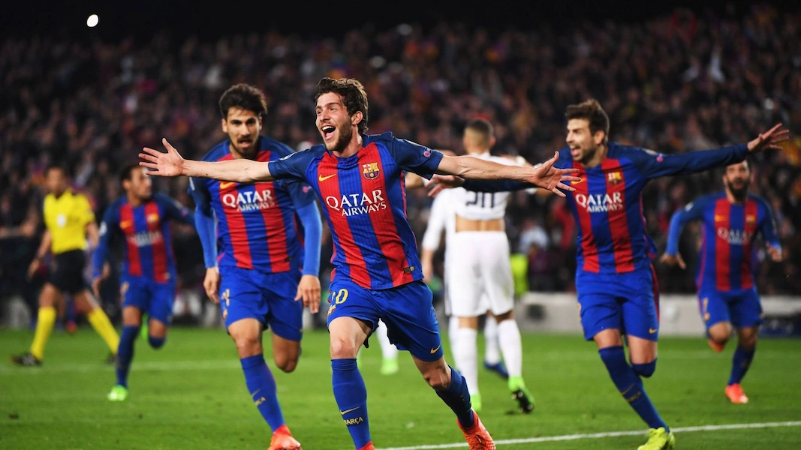

History of FC Barcelona
Origins and Foundation
Founded in 1899 by Swiss businessman Joan Gamper, FC Barcelona quickly became a cultural symbol of Catalonia. Its motto “Més que un club” represents the pride, unity, and independence of its people. From humble beginnings, the club’s commitment to excellence and passion has shaped its identity for over a century.
Golden Eras and Legends
Over the decades, FC Barcelona has experienced moments of brilliance, from Johan Cruyff’s “Dream Team” in the 90s to Pep Guardiola’s modern domination. Players like Messi, Xavi, Iniesta, and Ronaldinho brought beauty and magic to football, transforming Barça into a global reference for style and success.
Camp Nou
Inaugurated in 1957, the Camp Nou has been the beating heart of the club. With a capacity of nearly 100,000 fans, it stands as one of the largest and most iconic stadiums in Europe. Currently, it is undergoing a major renovation to become the new “Spotify Camp Nou”, merging tradition with modernity.
Memorable Matches
From epic comebacks to unforgettable victories, Camp Nou has witnessed the best moments in football history. One of the most famous is the 6–1 victory against PSG in 2017, which symbolized the spirit and resilience of this legendary team. This was an unforgettable night for Barça fans.
